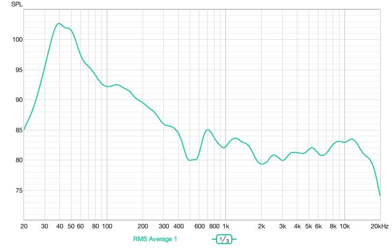
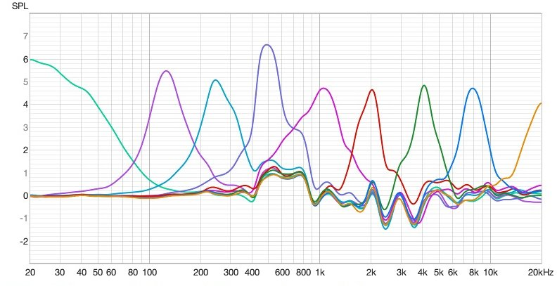
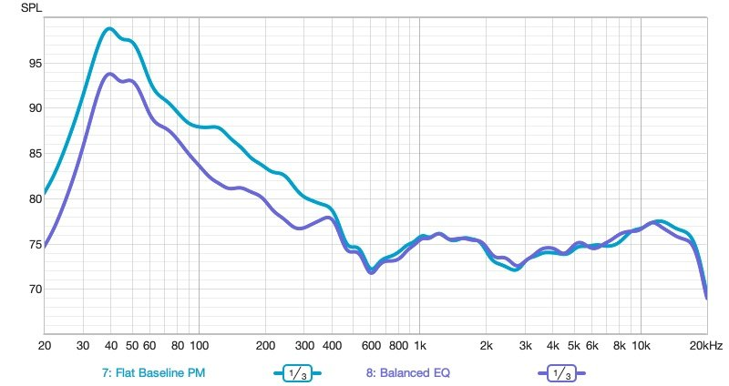
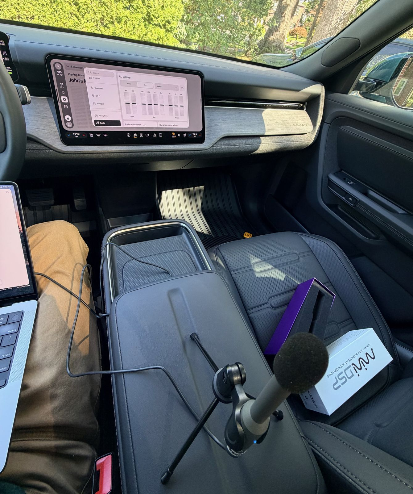
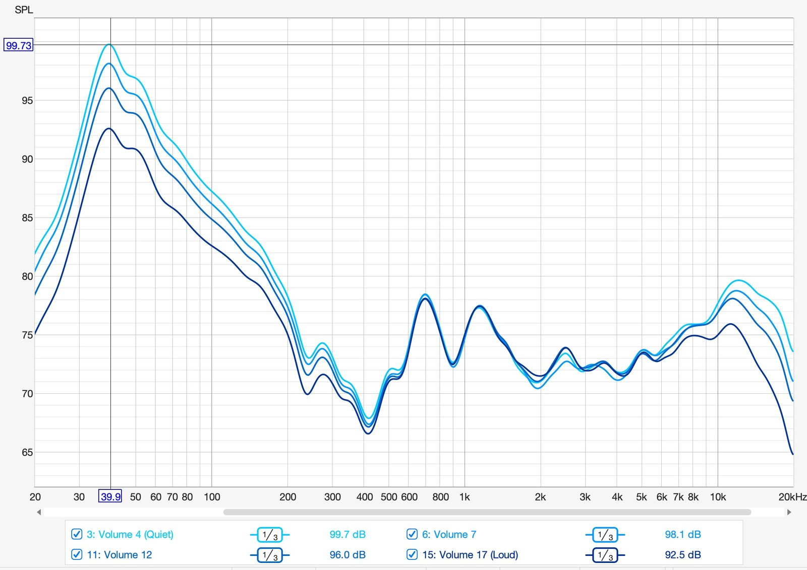

Rivian R2 Audio, Measured
Nobody knew how the Rivian R2’s audio system measures yet, or what EQ settings actually help, so I put a calibrated mic where my head goes and found out.
The R2 is new enough that there’s almost nothing out there about how its audio system actually measures, or what the EQ sliders really do. I had a calibrated mic, a laptop, and a new car to explore, so I spent a few sessions parked with the doors shut, finding out.
The results went up on Reddit as two posts. This is the whole thing in one place.
The setup
I held the mic at driver’s head height, pointed at the roof. REW generates a sweep, the laptop plays it to the car over Bluetooth, and the mic records what comes out. Doors closed, HVAC off, Dynamic Sound Adjust off, and the volume fixed at a loud-but-normal level, about 83 dB at the mic.
One spot in a car will lie to you. The cabin is small, reflective and lopsided, and moving the mic a few inches swings the 200–600 Hz range all over the place. So unless noted otherwise, every measurement here is five sweeps, moving the mic a few inches around where my head goes between each one, then averaged together.
Bluetooth is fine for this. It scrambles timing and phase, but the frequency response (how loud each pitch is) comes through intact. It does roll off the very top, around 15–18 kHz, so ignore the far right edge of every graph.
Stock, it’s all bass

With every slider at zero there’s a big hump centered around 40–50 Hz, about 20 dB above the level at 1 kHz, and it slopes down steadily through the upper bass. It’s still about +10 dB at 100 Hz. Some bass lift is normal and nice in a car, and a common target is around 8–12 dB. This is on the generous side, and it’s why the car can sound boomy out of the box.
Above about 700 Hz it’s impressively even, within about ±2 dB, with a mild dip around 2–3 kHz and a slight lift around 8–12 kHz.
Where does the hump come from? Mostly cabin gain: a small sealed space naturally boosts low bass, often by 10 dB or more. Add a tuning that leans bass-heavy, which survives road noise and sounds impressive in a showroom, and you get this.
What the R2’s EQ sliders actually do
The R2 has a nine-band EQ, one band per octave from 63 Hz to 16 kHz, and each slider moves ten steps up or down. The screen doesn’t say what a step is worth, so I pushed each slider to max one at a time, measured it, and divided the result by the flat baseline using REW’s Trace Arithmetic. What’s left is exactly what that one slider does.

Ten steps on the screen is about five decibels in the cabin.
Most bands top out around +5 dB, so one step is roughly half a decibel. The 500 Hz slider runs a little hotter, at about +6.5. The 63 Hz slider is a low shelf (about +6 at the very bottom), 125 Hz through 8 kHz are peaks about 0.8 octaves wide centered on their labels, and 16 kHz is a rising shelf that’s still climbing at 20 kHz. Cuts appear to mirror boosts: setting 63 and 125 to −10 took about 5 dB off the bass.
Two practical takeaways. One or two steps is barely audible, so don’t be shy — it takes four to ten steps to hear a real change. And at max cut the EQ only takes about 5 dB off a 20 dB hump. You can soften the boom, but not erase it. I tried working out a truly flat setting and gave up; a ±5 dB EQ against a +20 dB hump isn’t a fight you win, and flat tends to sound thin in a car anyway.
Rivian R2 EQ settings to try
Balanced aims for bass about 8–10 dB above the mids instead of flat. It cuts the low end as far as it goes and adds a small lift at 2–4 kHz to fill the vocal sag.
Balanced
Steps, −10 to +10
It does what it can. About 5 dB comes off at 40 Hz, about 4.5 at 100 Hz, and about 3 around 250–300 Hz. That gets the upper bass into the target range, around +8 dB at 100 Hz, but the deep bass still sits about 18 dB above 1 kHz. Above 400 Hz the two curves are nearly identical; the 2k and 4k boosts only show up as half a decibel or so. They’re a matter of taste more than measurement.
Harman-ish came from a commenter asking about the Harman curve, a target from Harman’s listener-preference research: a bass shelf of about +6 to +10 dB, flat mids, and a gentle downward tilt in the treble. Balanced already matched the mids, so this version pulls 250 Hz down a touch more, takes 4 kHz back to zero, and cuts 8 and 16 kHz to create the treble slope.
Harman-ish
Steps, −10 to +10The deep bass still lands about 8 dB above the Harman target, because the EQ runs out of range down there. Mids and treble get close; the bass gets as close as the R2 allows.
The car moves the bass with the volume
My morning and afternoon sessions didn’t match. The afternoon run was about 6 dB quieter, and it had a few dB more bass relative to the mids. Rather than blame mic placement, I ran it properly: the mic on a tripod in one fixed spot on the center console, flat EQ, DSA off, and sweeps at four volume levels, all aligned at 500 Hz–2 kHz so only the shape could differ.


| Car volume | Level at 40 Hz | Extra bass vs. vol. 17 |
|---|---|---|
| 4 (quiet) | 99.7 dB | +7 dB |
| 7 | 98.1 dB | +5.5 dB |
| 12 | 96.0 dB | +3.5 dB |
| 17 (loud) | 92.5 dB | — |
The quieter you listen, the more bass the car adds. It’s strongest in the deep bass, tapers through the upper bass, and is gone by about 500 Hz. The midrange stacks perfectly at every volume. The top end does a little of the same: at volume 17, the treble above 8 kHz is about 3 dB lower than at the quieter settings.
A skeptical commenter suggested the speakers were just compressing at high volume. So I checked the absolute levels instead of the aligned ones. From volume 4 to 17 the midrange rises about 25 dB, but the bass at 40 Hz only rises about 18. That shortfall is steady from the very quietest steps, where the mids are only around 60 dB — a level where speakers are completely linear. It isn’t the drivers. It’s the car’s DSP, on purpose. (Side note: each volume step works out to roughly 2 dB.)
This is loudness compensation. Your ears lose sensitivity to bass faster than to midrange as volume drops — that’s why music sounds thin when you turn it down — so the car adds bass back. I couldn’t find a setting that turns it off.
Dynamic Sound Adjust does nothing parked
At every volume, DSA off, low and high measured within about half a decibel of each other. That’s measurement noise. It held with my custom EQ too. So DSA isn’t the loudness compensation; it’s almost certainly based on speed or road noise, and adjusts the sound as you drive.
What it means if you own one
Tune the EQ at the volume you usually listen at. That’s the only volume where it’ll sound the way you set it. An EQ dialed in quietly will sound leaner when you crank it on the highway, and the other way around.
If it sounds boomy, cut 63 and 125 rather than boosting everything else, and move the sliders in big steps. And keep the caveats in mind: this is one car, measured parked, with one mic. Road noise changes what sounds right, and at highway speed a little extra bass usually earns its keep.
If you want to try this yourself
A few REW lessons I learned the hard way. When dividing one sweep by another in Trace Arithmetic, use |A| / |B|, not A / B; Bluetooth timing makes the phase meaningless, and complex division turns it into garbage. Leave Max gain unchecked, because it silently flattened a real +5 dB shelf on me. Smooth the source measurements before doing the arithmetic, not after. To compare sessions at different volumes, use Align SPL centered on 1 kHz with a two-octave span. And don’t accidentally average your new sweeps together with the old ones, which made one of my EQ changes look like it did nothing at all.
Next stop
Everything here was measured parked. Next is a driving test, with a passenger running the laptop, to find out what Dynamic Sound Adjust actually does and how loud the cabin gets at highway speed. The other seats are on the list too.
The original threads: what the sliders actually do and the loudness compensation follow-up. Happy to share the REW files with anyone who wants to dig in.